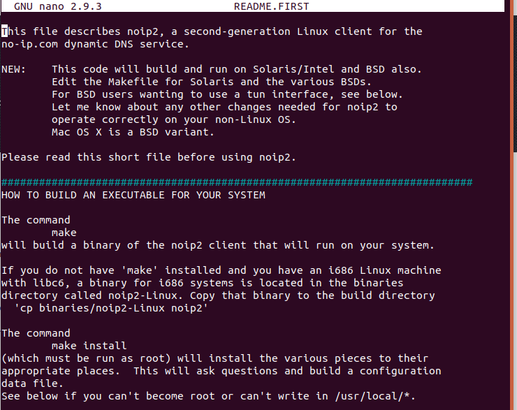
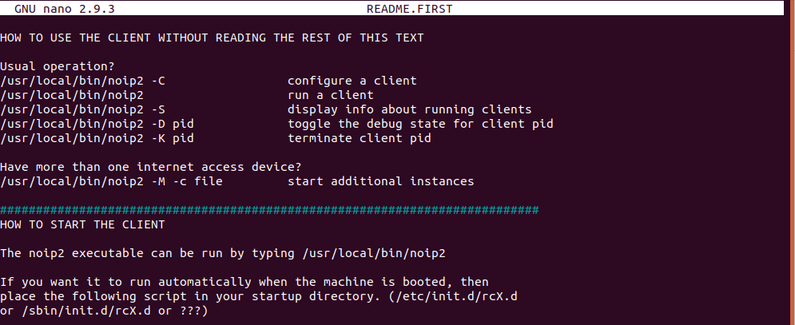

Bij de laatste weg levert de maker geen programma maar alleen de tekst waaruit het gemaakt wordt. Jij vertaalt die zelf naar een uitvoerbaar bestand. Je installeert hier de DUC client van no-ip, een programma dat het IP-adres achter een gratis domeinnaam bijhoudt wanneer dat adres verandert.
make leest een bestand dat bij de broncode zit en roept op basis daarvan de compiler aan. Het
staat zelf gewoon in de repository.
Installeer het met apt.
Reading package lists... Done
Building dependency tree
Reading state information... Done
make is already the newest version (4.1-9.1ubuntu1).
make set to manually installed.
0 upgraded, 0 newly installed, 0 to remove and 8 not upgraded.
Staat het er al, dan zegt apt dat en doet hij verder niets.
Surf naar noip.com, maak een account aan en registreer een domeinnaam. Je hebt die
gebruikersnaam en dat wachtwoord straks nodig bij de installatie.
Download vanaf je Ubuntu-machine de DUC software voor Linux, en kijk daarna wat er in je map Downloads staat.
total 123M
drwxr-xr-x 3 elm elm 4,0K Apr 16 10:59 .
drwxr-xr-x 24 elm elm 4,0K Apr 16 20:49 ..
drwxr-xr-x 10 elm elm 4,0K Feb 13 10:32 arduino-1.8.12
-r--r--r-- 1 elm elm 123M Apr 14 20:19 arduino-1.8.12-linux64.tar.xz
-rw-rw-r-- 1 elm elm 132K Apr 16 10:44 noip-duc-linux.tar.gz
Deze keer is het een .tar.gz, dus met gzip ingepakt, en dan neem je wel de
z erbij.
Pak het uit en ga in de map die eruit komt.
Het versienummer in die mapnaam kan bij jou anders zijn. Vul het aan met TAB in plaats van het over te typen.
Kijk wat er in de map staat.
total 360K drwxr-xr-x 2 elm elm 4,0K Nov 25 2008 binaries -rw-r--r-- 1 elm elm 18K Dez 14 2002 COPYING -rw-r--r-- 1 elm elm 889 Jan 17 2004 debian.noip2.sh -rw-r--r-- 1 elm elm 1021 Nov 25 2008 Makefile -rw-r--r-- 1 elm elm 76K Nov 25 2008 noip2.c -rw-r--r-- 1 elm elm 13K Jul 13 2004 README.FIRST -rw-r--r-- 1 elm elm 14K Feb 8 2006 README.FIRST.FRANCAIS
noip2.c is de broncode, Makefile is het bestand waaruit
make leest wat er moet gebeuren, en README.FIRST is de handleiding.
Er is geen enkel uitvoerbaar bestand bij.
Lees de handleiding met nano.

Sluit nano af met CTRL + X.
Vertaal de broncode naar een uitvoerbaar programma.
gcc -Wall -g -Dlinux -DPREFIX=\"/usr/local\" noip2.c -o noip2
noip2.c: In function 'dynamic_update':
noip2.c:1595:6: warning: variable 'i' set but not used [-Wunused-but-set-variable]
int i, x, is_group, retval, response;
^
noip2.c: In function 'domains':
noip2.c:1826:13: warning: variable 'x' set but not used [-Wunused-but-set-variable]
int x;
^
In de gemarkeerde regel zie je wat make doet: hij roept gcc aan,
de compiler, met de opties die in de Makefile staan. make compileert
dus zelf niet.
De regels eronder zijn warnings en geen errors. Een warning zegt dat de compiler iets vreemds ziet en toch doorgaat; een error zegt dat hij stopt. Je programma is dus gemaakt.
Zet het resultaat op zijn plaats. Dit commando vraagt de gebruikersnaam en het wachtwoord van je account bij no-ip, en niet die van je Linux-machine. Voor de rest ga je akkoord met wat het voorstelt.
Zoek in de handleiding hoe je de client start. Ze staat onder How to start the client.

make install het programma neergezet heeftJe hebt het zelf gecompileerd en zelf neergezet, dus je machine weet niet dat het bestaat. Komt er een nieuwe versie uit, dan moet je deze hele pagina opnieuw doorlopen. Dat is de prijs van de laatste weg, en het is de reden waarom je met de eerste begint.